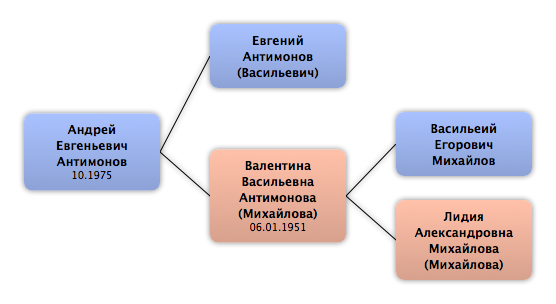

Домой
Домой
 Люди
Люди
 Семьи
Семьи
 Источники
Источники
 Диаграммы
Диаграммы
 Статистика
Статистика
Андрей Евгеньевич Антимонов

Контекст

Родители
| Отец | Дата рождения | Мать | Дата рождения |
|---|---|---|---|
|
Евгений Антимонов
|
 Валентина Васильевна Антимонова Валентина Васильевна Антимонова
|
06.01.1951 |
Родители и дети
| Партнёры | Дата рождения | Дети |
|---|
События
Факты
Медиа
Примечание
Источники
Родство
| Имя | Степень родства | Дата рождения | Место рождения | Дата смерти | Место смерти |
|---|---|---|---|---|---|
| Братья и сёстры | |||||
| Сестра | 08.12.1972 | ||||
| Родителей | |||||
| Отец | |||||
| Мать | 06.01.1951 | ||||
| Дедушки и бабушки | |||||
| Дедушка | |||||
| Бабушка | |||||
| Тёти и дяди | |||||
| Дядя | 1942 | ||||
| Дядя | 24.03.1949 | СССР | |||
| Дядя | 1953 | ||||
| Дядя | 08.1955 | ||||
| Тётя | 08.1957 | ||||
| Тёти и дяди жены(мужа) | |||||
| Тётя (по браку) | 13.05.1951 | Ленинград, СССР | 07.01.2009 | Санкт-Петербург, Россия | |
| Двоюродные братья и сёстры | |||||
| Двоюродная сестра | 06.12.1969 | ||||
| Двоюродная сестра | 11.02.1974 | Ленинград, СССР | |||
| Двоюродная сестра | 1976 | ||||
| Двоюродная сестра | 25.04.1977 | Ленинград, СССР | |||
| Двоюродная сестра | 10.1980 | ||||
| Двоюродный брат | 08.1985 | ||||
| Двоюродные племянники (племянницы) | |||||
| Двоюродный племянник | 15.07.1995 | Санкт-Петербург, Россия | |||
| Двоюродный племянник | 10.05.2002 | ||||